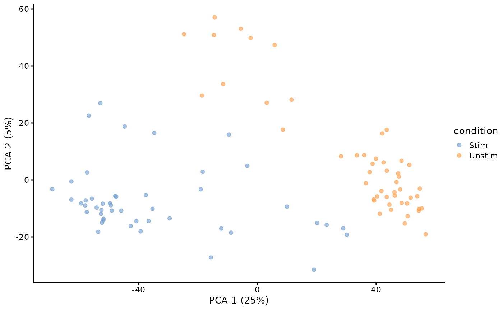
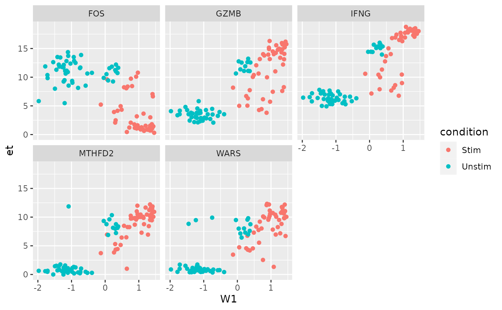

Interoptability between MAST and SingleCellExperiment-derived packages.
Andrew McDavid
2022-02-01
Source:vignettes/MAST-interoperability.Rmd
MAST-interoperability.RmdIntroduction
As a SingleCellExperiment-derived package, MAST can easily be inserted into workflows with packages such as scran, scater, zinbwave, SCnorm and others. Moreover, subclassing SingleCellExperiment/SummarizedExperiment provides a flexible abstraction for the assay that contains the actual expression data. It can use sparse Matrix and HDF5 as backends to save memory.
To use MAST with such packages, you just need to upcast the SingleCellExperiment to MAST’s subclass SingleCellAssay with the function SceToSingleCellAssay that handles the coercion and checks the object for validity. Going the other direction, generally SingleCellAssays should work in packages that use SingleCellExperiment, but if in doubt you could down-cast with as(sca, 'SingleCellExperiment').
Log-transformation is expected in MAST
The main gotcha in all this is that some SingleCellExperiment-derived packages assume integer counts have been provided, while MAST assumes that log-transformed approximately scale-normalized data is provided. We find that MAST performs best with log-transformed, scale-normalized data that has been thresholded, such as \(\log_2(\text{transcripts per million} + 1)\).
We address this by:
- testing for log-like data for objects up-cast to
SingleCellAssay - explicitly naming the slot of the
assaycontaining such putatively log-like data - by default operating on the slot with such log-like data
From MAST to Scater
Scater McCarthy et al. (2017) is a package that provides functions for QC, normalization and visualization of single cell RNAseq data.
## Loading required package: SingleCellExperiment## Loading required package: SummarizedExperiment## Loading required package: MatrixGenerics## Loading required package: matrixStats##
## Attaching package: 'MatrixGenerics'## The following objects are masked from 'package:matrixStats':
##
## colAlls, colAnyNAs, colAnys, colAvgsPerRowSet, colCollapse,
## colCounts, colCummaxs, colCummins, colCumprods, colCumsums,
## colDiffs, colIQRDiffs, colIQRs, colLogSumExps, colMadDiffs,
## colMads, colMaxs, colMeans2, colMedians, colMins, colOrderStats,
## colProds, colQuantiles, colRanges, colRanks, colSdDiffs, colSds,
## colSums2, colTabulates, colVarDiffs, colVars, colWeightedMads,
## colWeightedMeans, colWeightedMedians, colWeightedSds,
## colWeightedVars, rowAlls, rowAnyNAs, rowAnys, rowAvgsPerColSet,
## rowCollapse, rowCounts, rowCummaxs, rowCummins, rowCumprods,
## rowCumsums, rowDiffs, rowIQRDiffs, rowIQRs, rowLogSumExps,
## rowMadDiffs, rowMads, rowMaxs, rowMeans2, rowMedians, rowMins,
## rowOrderStats, rowProds, rowQuantiles, rowRanges, rowRanks,
## rowSdDiffs, rowSds, rowSums2, rowTabulates, rowVarDiffs, rowVars,
## rowWeightedMads, rowWeightedMeans, rowWeightedMedians,
## rowWeightedSds, rowWeightedVars## Loading required package: GenomicRanges## Loading required package: stats4## Loading required package: BiocGenerics## Loading required package: parallel##
## Attaching package: 'BiocGenerics'## The following objects are masked from 'package:parallel':
##
## clusterApply, clusterApplyLB, clusterCall, clusterEvalQ,
## clusterExport, clusterMap, parApply, parCapply, parLapply,
## parLapplyLB, parRapply, parSapply, parSapplyLB## The following objects are masked from 'package:stats':
##
## IQR, mad, sd, var, xtabs## The following objects are masked from 'package:base':
##
## anyDuplicated, append, as.data.frame, basename, cbind, colnames,
## dirname, do.call, duplicated, eval, evalq, Filter, Find, get, grep,
## grepl, intersect, is.unsorted, lapply, Map, mapply, match, mget,
## order, paste, pmax, pmax.int, pmin, pmin.int, Position, rank,
## rbind, Reduce, rownames, sapply, setdiff, sort, table, tapply,
## union, unique, unsplit, which.max, which.min## Loading required package: S4Vectors##
## Attaching package: 'S4Vectors'## The following objects are masked from 'package:base':
##
## expand.grid, I, unname## Loading required package: IRanges## Loading required package: GenomeInfoDb## Loading required package: Biobase## Welcome to Bioconductor
##
## Vignettes contain introductory material; view with
## 'browseVignettes()'. To cite Bioconductor, see
## 'citation("Biobase")', and for packages 'citation("pkgname")'.##
## Attaching package: 'Biobase'## The following object is masked from 'package:MatrixGenerics':
##
## rowMedians## The following objects are masked from 'package:matrixStats':
##
## anyMissing, rowMedians
knitr::opts_chunk$set(message = FALSE,error = FALSE,warning = FALSE)
data(maits, package='MAST')
unlog <- function(x) ceiling(2^x - 1)
sca_raw = FromMatrix(t(maits$expressionmat), maits$cdat, maits$fdat)## Assuming data assay in position 1, with name et is log-transformed.
assays(sca_raw)$counts = unlog(assay(sca_raw))
assayNames(sca_raw)Here we make an object with assays counts and et. By default, MAST will operate on the et assay, but scran wants count-like data for some of its QC. The et data are log2 + 1 transcripts per million (TPM), as output by RSEM.
We could specify the assay name at creation with sca_raw = FromMatrix(list(logTPM = t(maits$expressionmat)), maits$cdat, maits$fdat) or rename an object that contains appropriately transformed data with assayNames(sca_raw) = c('logTPM', 'counts').
Before calling scater functionality, you might pause to consider if some features should belong in special control sets, such as mitochrondial genes, or spike-ins.
library(scater)
sca_raw = addPerCellQC(sca_raw)
plotColData(sca_raw, y="detected", x="total")
Evidently some features were filtered, so not all cells contain 1 million counts.
sca_raw = runPCA(sca_raw, ncomponents=5, exprs_values = 'et')
plotReducedDim(sca_raw, dimred = 'PCA', colour_by = 'condition') We can also run a PCA.
From scater to MAST
Since scater uses SingleCellExperiment objects, the only here consideration is making sure MAST can find log-like data, and possibly thresholding the data.
example_sce = mockSCE()
example_sce = logNormCounts(example_sce)
sca = SceToSingleCellAssay(example_sce)Here we coerce example_sce to be a SingleCellAssay object.
zlm( ~ Treatment, sca = sca, exprs_value = 'logcounts')## Fitted zlm on 2000 genes and 200 cells.
## Using BayesGLMlike ~ TreatmentWe test for differential expression with regards to Treatment and explicitly indicate the logcounts slot will be used. Methods in MAST will operate on the default slice returned by assay, which has been over-ridden to return log-like data: the default slice is the first assay whose name, as given by assayNames(x), matches the first element in the sequence c('thresh', 'et', 'Et', 'lCount', 'logTPM', 'logCounts', 'logcounts'). So in the case of sca, even if exprs_value was not specified, the logcounts slot would have been used, even though it comes second in assayNames(sca):
assayNames(sca)## [1] "counts" "logcounts"Sparse matrix and HDF5 support
library(Matrix)
sca_sparse = FromMatrix(
exprsArray = list(et = Matrix(t(maits$expressionmat), sparse = TRUE)),
cData = maits$cdat, fData = maits$fdat)
class(assay(sca_sparse))## [1] "dgCMatrix"
## attr(,"package")
## [1] "Matrix"
regular_time = system.time(zlm( ~ condition, sca = sca_raw[1:100,]))
sparse_time = system.time(zlm( ~ condition, sca = sca_sparse[1:100,]))There is no complication to providing a sparse matrix.
library(DelayedArray)
library(HDF5Array)
hd5_dat = as(t(maits$expressionmat), 'HDF5Array')
DelayedArray::seed(hd5_dat)## An object of class "HDF5ArraySeed"
## Slot "filepath":
## [1] "/tmp/RtmpNbzSji/HDF5Array_dump/auto00001.h5"
##
## Slot "name":
## [1] "/HDF5ArrayAUTO00001"
##
## Slot "as_sparse":
## [1] FALSE
##
## Slot "type":
## [1] NA
##
## Slot "dim":
## [1] 16302 96
##
## Slot "chunkdim":
## [1] 13031 76
##
## Slot "first_val":
## [1] 0Write sc_example_counts to disk as an HDF5Array
sca_delay = FromMatrix(
exprsArray = list(et = hd5_dat),
cData = maits$cdat, fData = maits$fdat)
class(assay(sca_sparse))## [1] "dgCMatrix"
## attr(,"package")
## [1] "Matrix"
hd5_time = system.time(zlm( ~ condition, sca = sca_delay[1:100,]))Nor is there a complication to using HDF5-backed stores.
knitr::kable(data.frame(method = c('Dense', 'Sparse', 'HDF5'), 'user time(s)' =c( regular_time[1], sparse_time[1], hd5_time[1]), check.names = FALSE))| method | user time(s) |
|---|---|
| Dense | 0.519 |
| Sparse | 0.623 |
| HDF5 | 12.724 |
Dense storage is generally fastest, followed by the sparse storage. HDF5 is often slowest, but if your data doesn’t fit in memory, you don’t really have any other choice. The linear models underlying MAST don’t have any special provision for big \(n\) data, and will tend to linearly (or worse) in the number of cells. So performance may be an issue even if they data do fit in memory.
MAST and ZINB-wave
library(zinbwave)
feature_var = apply(assay(sca_raw), 1, var)
sca_top500 = sca_raw[rank(-feature_var)<=500,]
zw = zinbwave(Y = sca_top500, X = '~1', which_assay = 'counts', K = 2, normalizedValues = TRUE)Run zinbwave. To speed things, we take the top 500 most variable genes.
rd = data.frame(reducedDim(zw, 'PCA'), reducedDim(zw, 'zinbwave'), colData(zw))
GGally::ggpairs(rd, columns = c('PC1', 'PC2', 'W1', 'W2'), mapping = aes(color = condition))Using MAST to characterizing genes that drive the factors
colData(zw) = cbind(colData(zw), reducedDim(zw, 'zinbwave'))
zw = SceToSingleCellAssay(zw)
zz = zlm(~W1 + W2, sca = zw, exprs_values = 'et')Fitted zlm with top 2 genes per contrast: ( log fold change Z-score ) primerid W1 W2
2197 2.6 -4.1 3002 11.3 -0.1 3312 5.2 -4.2 3458 12.4 -0.1
| primerid | W1 | W2 |
|---|---|---|
| 2197 | 2.6 | -4.1* |
| 3002 | 11.3* | -0.1 |
| 3312 | 5.2 | -4.2* |
| 3458 | 12.4* | -0.1 |
These are log-fold changes in the top few changes associated with factors 1 and 2.
library(dplyr)
library(data.table)
top5 = ss$datatable %>% filter(component=='logFC', contrast %like% 'W') %>% arrange(-abs(z)) %>% head(n=5) %>% left_join(rowData(zw) %>% as.data.table())
dat = zw[top5$primerid,] %>% as('data.table')
dat = dat[,!duplicated(colnames(dat)),with = FALSE]
plt = ggplot(dat, aes(x=W1, color = condition)) + geom_point() + facet_wrap(~symbolid)
plt + aes(y = et)
Expression on “Et” scale (\(\log_2( TPM + 1)\))
plt + aes(y = normalizedValues)Normalized expression from factor model
References
McCarthy, Davis J., Kieran R. Campbell, Aaron T. L. Lun, and Quin F. Willis. 2017. “Scater: Pre-Processing, Quality Control, Normalisation and Visualisation of Single-Cell RNA-Seq Data in R.” Bioinformatics 33 (8): 1179–86. https://doi.org/10.1093/bioinformatics/btw777.